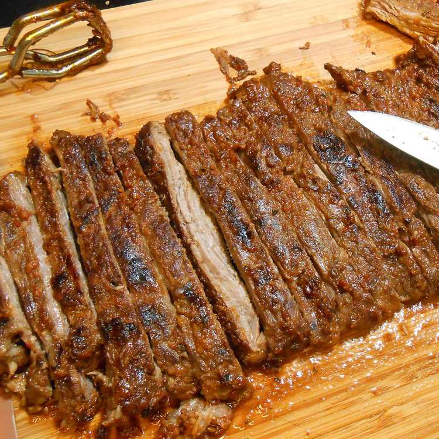

Other Recipes
Grilled Mexican Steak

Description
Mouth-watering marinated steak with a touch of spice
Ingredients
- ½ cup cumin seeds
- 5 jalapeno peppers, seeds and ribs removed, chopped
- 3 cloves garlic
- 1 tablespoon cracked black pepper
- ⅓ cup fresh lime juice
- 1½ teaspoons salt
- 1½ cups olive oil
- 2 bunches cilantro (leaves and stems incl.)
- 1 (3 pound) skirt or flank steak
Steps
- Toast the cumin seeds in a medium saute pan over medium-low heat for 5 minutes, or until fragrant.
- In a blender, combine the cumin seeds, jalapenos, garlic, pepper, lime juice, and salt. Pulse the blender to finely chop ingredients. Add the oil and cilantro and puree until smooth.
- Lightly score both sides of the meat with a knife so that the marinade will penetrate. Place the meat in a large plastic bag or bowl, pour in the marinade, and coat well. Marinate in the refrigerator for 24 to 48 hours.
- Preheat an outdoor grill for high heat and lightly oil grate.
- Remove the meat from the marinade and discard the remaining marinade. Cook on high, 1 to 2 minutes per side, to sear the meat. Turn the heat down to low and cook for an additional 3 to 4 minutes per side, or until the it has reached the desired doneness.